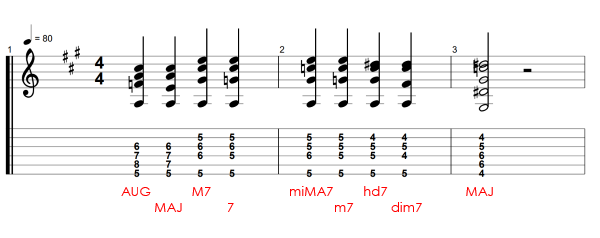
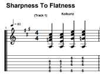

GROWL
I'd rather be playing guitar
FR
 EN
EN
Practising chords can be a dry affair. Targeting them all smoothly, making sure no important shapes are missed is quite tricky. This exercise is designed to help hit everything and in an easy to remember and useful progression.
The basics of it: take a root note and then play each triad and seventh chord (omitting sus chords) descending from sharpest chord to flattest. By that I mean from the version of the chord with most sharp members to the least. Finally, from the fully diminished seventh chord we resolve to the major chord a half step below. As well as a sounding nice, this helps practice tritone substitution. In the exercise document, I have repeated the same descending progression from this new tonic chord (bars 4-6), in fact you can do this until you run out of frets!
Bars 7, 10 and 13 begin the progression again from the original tonic chord but using a different chord shape. If you follow the CAGED system, I have used the E,A,D and C chord shapes. The only one not covered is G shape as it basically isn't useable for many 7th chords.
TO SUMMARISE: We start with an augmented chord. This contains the tonic, major third, augmented (sharp) fifth and octave tonic. It is spelled R,M3,5+,8ve. Going one flatter we get to a major chord, the same only with a perfect fifth. Next, we get a major seventh chord, where the 8ve has been flattened to the M7. Flat this seventh again and we get a dominant 7 chord. The tonality is still major but the 7th is flatter. Rather than go next to a minor seven chord, I go next to the miMA 7 chord, aka the minor-major seven chord. This is little used, occurring only usually in the harmonic minor. But like everything else, it gets its place because you have to think about which voices are moving when you move your fingers to play it.
Therein lies the idea that motivated the exercise. Which voices move where? Once this progression gets familiar it becomes much easier to think about these chords relative to one another in terms of internal voices.
Here is the exercise file. Learn the progression, watch how the voices move and never worry about covering all your positions ever again!
